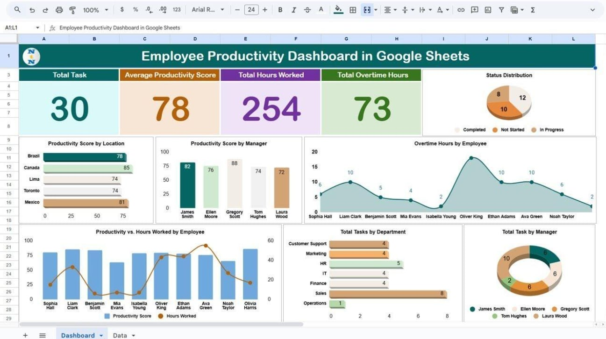

Hi, I'm Patrick Damicog.
Customer support professional, team leader, and problem solver who believes great experiences begin with listening, ownership, and continuous improvement.
About Me
A little about my professional journey and what I bring to a team.
I have 9 years of experience in the BPO industry, including customer service, technical support, and Team Leader responsibilities. I've developed strong communication, problem-solving, coaching, and organizational skills through supporting customers and helping teams work toward their goals.
I enjoy learning systems, adapting to new processes, and making information easier to use. I'm also building practical web-development skills and creating digital projects that reflect my curiosity and initiative.
Whether assisting a customer, coordinating work, documenting an issue, or helping a teammate improve, I approach tasks with professionalism, patience, and accountability.
Skills & Capabilities
A mix of people skills, operational experience, and developing technical capabilities.
Customer Service
Customer inquiries, empathetic communication, resolution and follow-up.
Technical Support
Troubleshooting, explaining solutions, documenting and escalating issues.
Team Leadership
Coaching, performance monitoring, motivation and accountability.
Operations
Process adherence, coordination, reporting and workflow organization.
Communication
Clear writing, professional calls, listening and collaboration.
Administrative Support
Tracking, documentation, scheduling, task follow-up and organization.
Web Fundamentals
HTML, CSS, JavaScript basics and JSON-driven content.
Problem-solving
Investigating issues, identifying gaps and taking practical action.
Selected Projects & Work Samples
Illustrative work samples based on workflows and skills. These are descriptions of capabilities, not claims of client deliverables.

Customer Support Workflow
A structured approach to handling customer concerns from first contact to resolution and documentation.
- Receive Request – Receive customer inquiries via phone, email, chat, or ticket.
- Understand the Issue – Listen, gather information, and identify the root cause.
- Confirm and document
- Provide a Solution – Troubleshoot, provide guidance, or escalate if necessary.
- Confirm Resolution – Ensure the customer's issue is resolved and they are satisfied.
- Document & Follow Up – Record the interaction and monitor pending actions.

Team KPI Tracker
A spreadsheet concept for tracking attendance, performance, progress and follow-up actions.
- Organized data columns
- Progress visibility
- Action tracking

Coaching Framework
A practical coaching flow focused on identifying gaps, setting actions and supporting improvement.
- Review performance
- Agree action plan
- Follow up

Knowledge Hub Website
A searchable resource hub concept for organizing support articles, links and troubleshooting information.
- HTML, CSS & JS
- JSON content
- Searchable resources
Lead & Appointment Flow
A lead-management process designed to capture, qualify, book, track and follow up on leads.
- Lead qualification
- Calendar booking
- Follow-up tracking
Personal Development
Ongoing self-development through learning tools, building small projects and improving digital workflows.
- Learn new tools
- Practice projects
- Reflect and improve
Professional Experience
Experience across customer service, technical support and team leadership.
Customer Care · rain South Africa
- Handled customer calls and emails involving rain products and services, troubleshooting, account concerns, and complaints.
- Explained product and service information clearly, documented customer interactions, and maintained accurate records.
- Handled escalations and collaborated with other departments.
- Focused on customer satisfaction, effective communication, and meeting performance expectations.
Team Leader · Foundever
- Motivate and guide team members toward targets.
- Track KPIs, attendance, productivity, and performance metrics.
- Provide feedback, coaching, and improvement plans.
- Manage schedules, workload, and daily operations.
Senior Representative · IQor
- The go-to resource for product, process, and system knowledge.
- Agent support, escalations, knowledge management, coaching, and process improvement.
- Product knowledge, communication, problem-solving, collaboration, and continuous learning.
Technical Support Representative · Teletech
- Troubleshot customer technical concerns.
- Guided customers through clear step-by-step solutions.
- Documented cases and escalated complex issues.
Tools & Technologies
Tools I've used or am developing familiarity with. Platform-specific experience can vary by role.
Let's Connect
I'm open to opportunities in customer support, technical support, team leadership, operations and virtual assistance.
Get in touch
Email: damicogpatrick2020@gmail.com
LinkedIn: https://www.linkedin.com/in/patrick-eduard-john-damicog-789062329/
Location: Philippines · Remote-ready
What I bring
Customer-first mindset, leadership experience, a willingness to learn, and a commitment to taking ownership of my work.